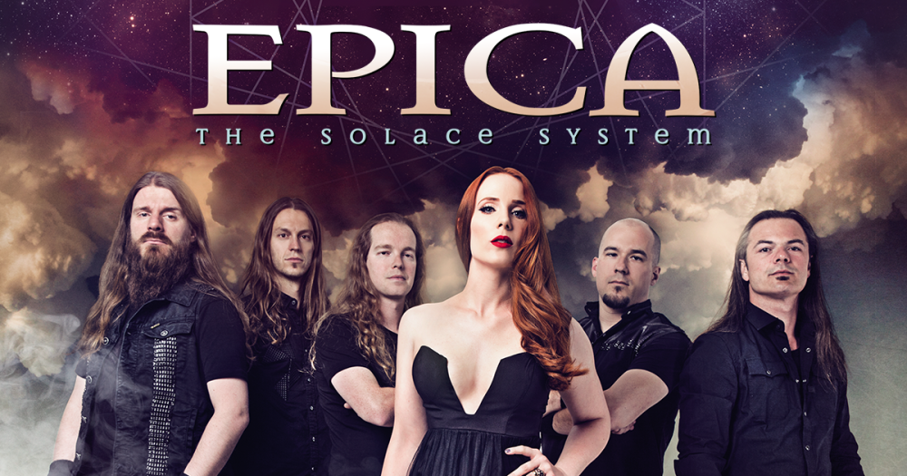

Jérome LESAINT, connecté

Eius populus ab incunabulis primis ad usque pueritiae tempus extremum, quod annis
circumcluditur fere trecentis, circummurana pertulit bella, deinde aetatem ingressus adultam
post multiplices bellorum aerumnas Alpes transcendit et fretum, in iuvenem erectus et virum
ex omni plaga quam orbis ambit inmensus, reportavit laureas et triumphos, iamque vergens in
senium et nomine solo aliquotiens vincens ad tranquilliora vitae discessit.
Quod opera consulta cogitabatur astute, ut hoc insidiarum genere Galli periret avunculus, ne
eum ut praepotens acueret in fiduciam exitiosa coeptantem. verum navata est opera diligens
hocque dilato Eusebius praepositus cubiculi missus est Cabillona aurum secum perferens, quo
per turbulentos seditionum concitores occultius distributo et tumor consenuit militum et salus
est in tuto locata praefecti. deinde cibo abunde perlato castra die praedicto sunt mota.
Et prima post Osdroenam quam, ut dictum est, ab hac descriptione discrevimus, Commagena,
nunc Euphratensis, clementer adsurgit, Hierapoli, vetere Nino et Samosata civitatibus amplis
inlustris.Eius populus ab incunabulis primis ad usque pueritiae tempus extremum, quod annis
circumcluditur fere trecentis, circummurana pertulit bella, deinde aetatem ingressus adultam
post multiplices bellorum aerumnas Alpes transcendit et fretum, in iuvenem erectus et virum
ex omni plaga quam orbis ambit inmensus, reportavit laureas et triumphos, iamque vergens in
senium et nomine solo aliquotiens vincens ad tranquilliora vitae discessit.
Et prima post Osdroenam quam, ut dictum est, ab hac descriptione discrevimus, Commagena, nunc Euphratensis, clementer adsurgit, Hierapoli, vetere Nino et Samosata civitatibus amplis inlustris.